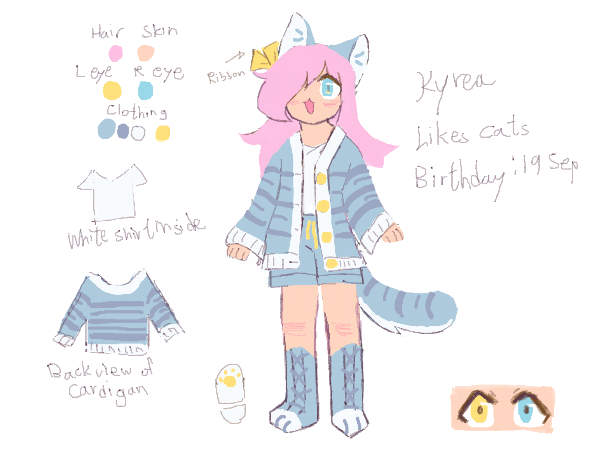

Meow :3

Lore facts:
- She spends most of her time playing Minecraft and chatting with online friends * I love my puter, all my friends are in it :33
- Although she have played Minecraft for a decent amount of time, she's still bad at pvp
- Therefore, whenever she defeats another player, she celebrates it with a party
She finds it embarrassing, but she is a huge crybaby* Im not a crybaby >:(((
Meta facts:
- She was my Minecraft skin and sona
- That's why I base her off my 10 year old self
- This current design is her second major redesign
- And she's the first character I draw when I was reintroduced to drawing